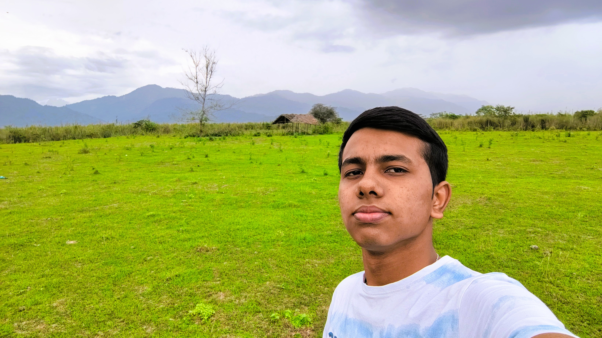

Hi, I’m Anurag Dutta.
Building software with clear logic and thoughtful craft.
I am a computer science student passionate about clean architecture, core data structures, and building dependable web applications. Alongside engineering, I channel creative energy into theatre, literature, and graphic design.
Photographs
Snapshots from academic life, student activities, and creative pursuits.
.jpg)
Academic & Development
Building my foundation in computer science and taking small steps towards becoming a better developer.

A Moment of Calm
Taking a break from the routine, enjoying the outdoors, and finding inspiration in simple moments.
.jpg)
College Life
Capturing moments from college life, where every day brings new experiences and opportunities to grow.
About Me
I am an undergraduate student in Computer Science and Engineering, focused on mastering fundamental computing concepts, writing clean code, and building practical applications.
My journey began with an innate curiosity about how digital systems turn abstract logic into tangible real-world tools. Today, I split my focus between algorithms, system principles, and responsive web technologies.
Beyond the computer screen, I actively explore theatre, creative writing, and graphic design. These multidisciplinary interests teach me to communicate clearly, structure work with intent, and appreciate the human side of software engineering.
Clean Architecture
Prioritizing readable, maintainable, and modular codebases.
Continuous Learning
Consistently expanding my foundational knowledge in algorithms and modern stacks.
Quick Overview
- Degree B.Tech in Computer Science & Engineering
- Status Undergraduate Student
- Key Interests MERN Stack Development, C/C++, Python, Computer Vision
- Based in Assam
Academic Journey
My educational progression from secondary school to my current engineering degree.
High School Certificate (Class X)
Shankardev Shishu Niketan, Dergaon
Built a strong academic foundation while participating in quiz competitions, speech contests, and recitation, and helping organize cultural events that strengthened my communication, confidence, and leadership skills.
Higher Secondary (Class XII) — Science Stream
Radiant College, Dergaon
Focused on Physics, Chemistry, Mathematics, and Biology while preparing for competitive entrance examinations for higher education.
B.Tech in Computer Science and Engineering
Dhemaji Engineering College, Dhemaji
Exploring different technologies, participating in hackathons, and working on ideas that aim to solve real-world problems through practical, technology-driven solutions. Selected as a GeeksforGeeks Campus Mantri for a six-month tenure, supporting technical learning and coding culture among fellow students.
Skills & Technologies
Technologies, languages, and tools I actively use and learn.
Web Development
Building clean, responsive, and accessible digital interfaces.
Programming
Core languages, data structures, and algorithmic logic.
Tools & Workflow
Version control, code editor, and design software.
Projects In Progress
“I'm currently working on a few things. This space will be updated as they take shape.”
I am intentionally building projects that demonstrate clean code structure, solid fundamentals, and thoughtful interface design.
DEC Resources
A central web portal designed to streamline access to essential digital resources, documents for the DEC community.
Beyond Coding
Creative disciplines that inform my thinking, teamwork, and approach to problems.
Drama & Acting
Performing in various drama competitions and stage shows has strengthened my acting, spontaneity, and stage presence, earning me the Best Actor award on multiple occasions.
Poetry & Literature
I enjoy writing poems and articles as a way to put my thoughts into words, explore different perspectives, and express what I might not always say aloud. It’s my creative space beyond coding.
Music
As a Tabla Visharad, music has become more than just a passion for me. It has taught me discipline, patience, and the joy of expressing myself through rhythm.
Graphic Design
I enjoy drawing and experimenting with design, turning ideas into something I can see and share. It’s a way to express my creativity beyond code and add a personal touch to my creations.
Get In Touch
Have a question, collaboration idea, or internship opportunity? Feel free to reach out.
Let's start a conversation.
I am always happy to discuss new opportunities, software ideas, or creative collaborations.